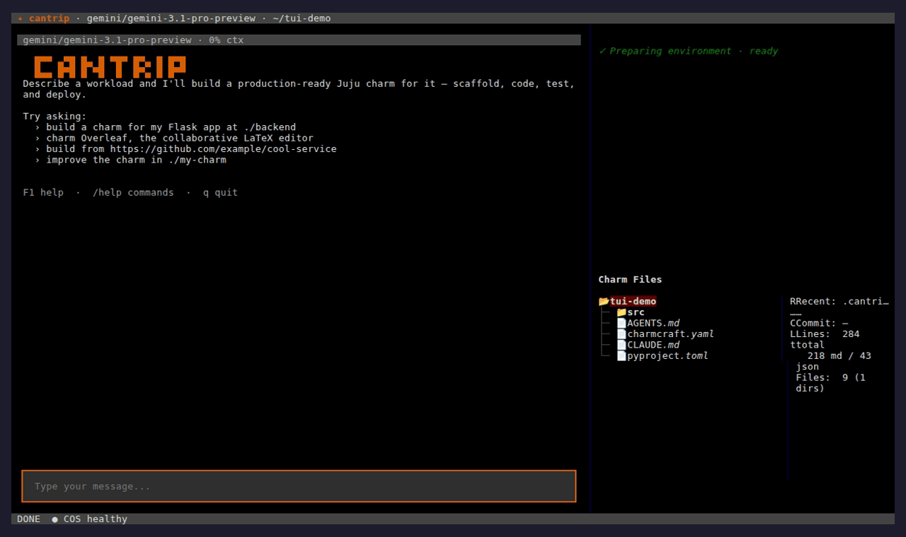
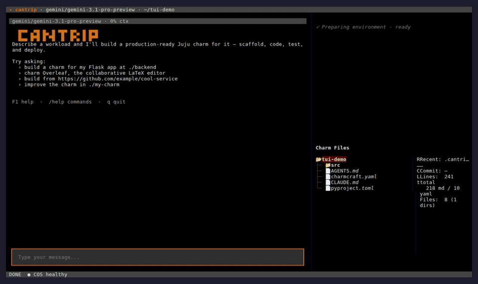
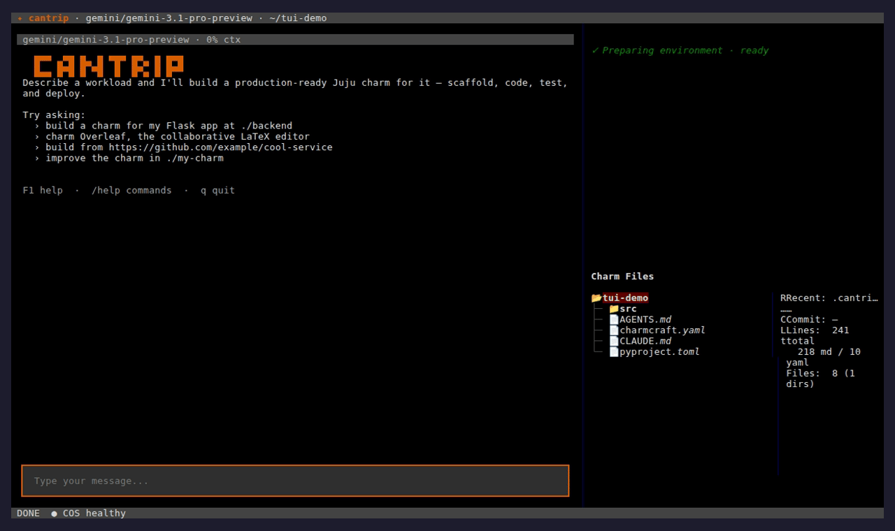
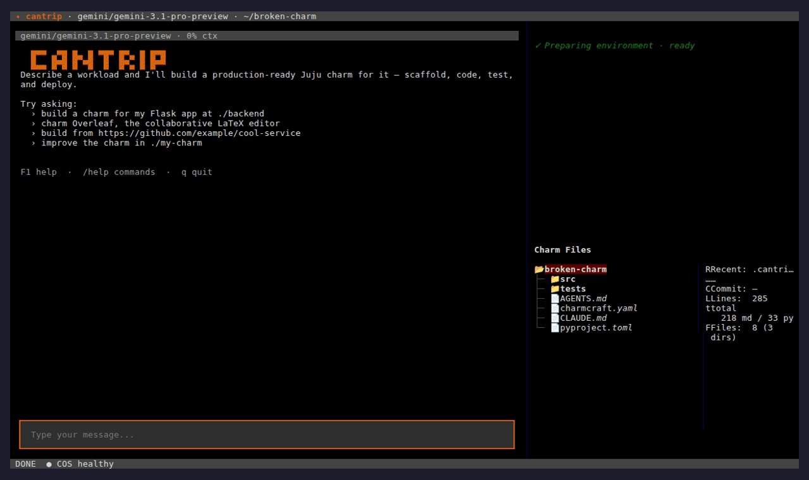
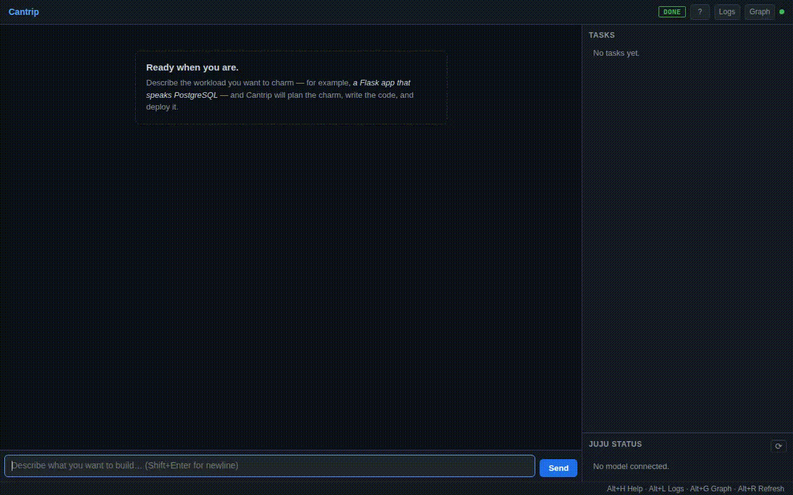

Fourteen clips covering Cantrip's modes of operation, the inline
affordances surfaced through the TUI, and the deterministic
helper tools. Asciicasts embed via
asciinema-player
(CDN-loaded); GIFs render inline.
Hero — building ntfy from scratch
--no-tui --yolo · ~3 min 10 s (sped up 2× from a 6 min 20 s
raw capture) · research → synthesis → design proposal
TUI
cantrip run --theme cantrip · ~12 s · slash commands
/memory, /cost, /diagnostics,
/map
TUI · slash + @ autocomplete + help
~25 s · typing /c filters slash commands inline,
typing @do filters context providers, /help
opens the rounded modal — the inline affordances most users
discover by accident

TUI · Ctrl-X shell mode
~25 s · Ctrl-X tints the input border amber and
routes Enter to a subprocess instead of the agent — zero
tokens spent, output renders as a $-prefixed
shell block in the chat
TUI · /plan read-only gate
~25 s · /plan enters the read-only mode (no file
edits, no shell calls); the status bar tints amber and badges
plan mode until /build flips back

TUI · --yolo confirmations off
~22 s · the --yolo startup flag tints the status
bar red with the YOLO MODE — confirmations off badge
so the elevated trust setting is impossible to miss

TUI · /pause and /resume
~25 s · /pause stops the autonomous loop picking
new tasks (the chat keeps working); /resume flips
it back on. The status bar's lifecycle badge follows the
state.
TUI · /feelings inner parliament
~50 s · /feelings convenes joy + fear (the
two-emotion default). Each emotion deliberates against the
current charm state and contributes to a Markdown summary
that lands in the chat. Run against a real charm.

Web UI
cantrip run --web · ~28 s · agent reads two files,
streams the answer back into the chat pane

CLI · headless print mode
cantrip run --print + --json · ~73 s · plain
output then NDJSON event stream
--improve audit
cantrip run --improve --max-iterations 1 --print · ~51 s
· Gemini auditing a deliberately incomplete charm
charmlint
Standalone Juju charm linter · ~30 s · 12 categories, JSON output,
strict CI mode
quickpack
Drop-in charmcraft pack replacement · ~39 s · Python and
Rust backends, 50 ms cold packs
Embeds load casts via fetch(), which most browsers block
over file://. Serve this directory over HTTP first:
python3 -m http.server -d demos/recordings 8000
then open http://localhost:8000/index.html.